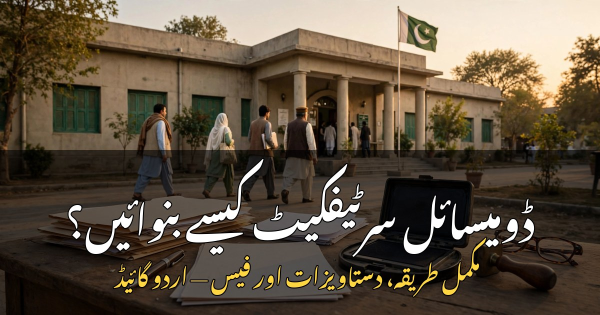

ڈومیسائل سرٹیفکیٹ کیسے بنوائیں؟ مکمل طریقہ اور فیس

ڈومیسائل سرٹیفکیٹ پاکستان میں ہر شہری کے لیے ایک بنیادی دستاویز ہے۔ یہ ثابت کرتا ہے کہ آپ کس ضلع اور صوبے کے مستقل رہائشی ہیں۔ سرکاری نوکری، یونیورسٹی میں داخلہ، پاسپورٹ یا اسکالرشپ — تقریباً ہر جگہ ڈومیسائل مانگا جاتا ہے۔ بہت سے لوگ اس کی اہمیت تب سمجھتے ہیں جب آخری تاریخ قریب ہو اور ڈومیسائل موجود نہ ہو۔ اس مضمون میں ڈومیسائل بنوانے کا مکمل طریقہ آسان اردو میں بتایا گیا ہے — اہلیت، دستاویزات، دفتر اور آن لائن طریقہ، فیس اور عام غلطیاں۔
1۔ ڈومیسائل سرٹیفکیٹ کیا ہے؟
ڈومیسائل ایک سرکاری دستاویز ہے جو ڈپٹی کمشنر کے دفتر سے جاری ہوتا ہے۔ اس میں آپ کا نام، والد کا نام، مستقل پتہ، ضلع اور صوبہ درج ہوتا ہے۔ یہ اس بات کا ثبوت ہے کہ آپ اس ضلع کے مستقل رہائشی ہیں۔ پاکستان میں سرکاری ملازمتوں میں صوبائی اور ضلعی کوٹہ ہوتا ہے، اس لیے ڈومیسائل یہ طے کرتا ہے کہ آپ کس کوٹے کے تحت درخواست دے سکتے ہیں۔ شناختی کارڈ آپ کی شناخت ثابت کرتا ہے، جبکہ ڈومیسائل آپ کی رہائش ثابت کرتا ہے — دونوں الگ دستاویزات ہیں اور دونوں کی اپنی جگہ اہمیت ہے۔
2۔ ڈومیسائل کہاں کہاں کام آتا ہے؟
ڈومیسائل کی ضرورت زندگی کے کئی اہم مواقع پر پڑتی ہے۔ سرکاری نوکریوں کی درخواست میں یہ لازمی ہوتا ہے، کیونکہ کوٹہ اسی کی بنیاد پر طے ہوتا ہے۔ یونیورسٹیوں اور کالجوں میں داخلے کے وقت، خصوصاً صوبائی کوٹے کی نشستوں پر، ڈومیسائل مانگا جاتا ہے۔ پاسپورٹ بنوانے، اسکالرشپس اور وظائف کے لیے درخواست دینے، اور سرکاری اسکیموں میں حصہ لینے کے لیے بھی یہ دستاویز درکار ہوتی ہے۔ اس لیے بہتر ہے کہ ڈومیسائل وقت پر بنوا کر محفوظ رکھیں، تاکہ کسی بھی موقع پر تاخیر نہ ہو۔
3۔ ڈومیسائل کے لیے اہلیت
درخواست دینے والا شخص پاکستانی شہری ہونا چاہیے اور اس ضلع کا مستقل رہائشی ہونا چاہیے جس کے لیے وہ درخواست دے رہا ہے۔ عام طور پر جس ضلع میں آپ یا آپ کے والدین مستقل طور پر رہتے ہیں، وہی آپ کا ڈومیسائل ضلع بنتا ہے۔ بچوں کا ڈومیسائل عام طور پر والد کے ڈومیسائل والے ضلع سے بنتا ہے۔ عمر کی کوئی خاص حد نہیں — ہر پاکستانی شہری ڈومیسائل بنوا سکتا ہے۔ اگر آپ نے کسی دوسرے ضلع میں مستقل رہائش اختیار کر لی ہے تو وہاں کا ڈومیسائل بھی بن سکتا ہے، مگر اس کے لیے وہاں کی مستقل رہائش کا ثبوت دینا پڑتا ہے۔ ایک وقت میں صرف ایک ضلع کا ڈومیسائل رکھا جا سکتا ہے۔
4۔ درکار دستاویزات
درخواست دینے سے پہلے یہ دستاویزات تیار رکھیں، تاکہ دفتر کے چکر نہ لگانے پڑیں۔ بالغ افراد کے لیے اپنا اصل شناختی کارڈ اور اس کی فوٹو کاپی ضروری ہے۔ نابالغ بچوں کے لیے بی فارم یا پیدائش کا سرٹیفکیٹ درکار ہوتا ہے۔ والد یا والدہ کے شناختی کارڈ کی کاپی بھی ساتھ لگانی پڑتی ہے۔ رہائش کے ثبوت کے طور پر بجلی یا گیس کا بل، یا رہائش کا کوئی اور سرکاری ثبوت مانگا جا سکتا ہے۔ دو پاسپورٹ سائز تصاویر ساتھ رکھیں۔ بعض اضلاع میں حلف نامہ بھی مانگا جاتا ہے کہ آپ اس ضلع کے مستقل رہائشی ہیں اور آپ کا پہلے سے کسی اور ضلع کا ڈومیسائل نہیں ہے۔ فہرست ضلع کے لحاظ سے مختلف ہو سکتی ہے، اس لیے جانے سے پہلے متعلقہ دفتر سے تصدیق کر لیں۔
5۔ ڈومیسائل بنوانے کا طریقہ — قدم بہ قدم
پہلا قدم یہ ہے کہ اپنے ضلع کے ڈپٹی کمشنر کے دفتر یا ای خدمت مرکز جائیں۔ دفتر سے فارم لیں اور اسے احتیاط سے پُر کریں — نام، والد کا نام، تاریخِ پیدائش اور پتہ بالکل ویسا لکھیں جیسا شناختی کارڈ یا بی فارم پر درج ہے۔ فارم کے ساتھ تمام دستاویزات کی کاپیاں منسلک کریں اور اصل دستاویزات بھی ساتھ رکھیں، کیونکہ تصدیق کے لیے اصل دیکھے جا سکتے ہیں۔ درخواست جمع کرانے کے بعد آپ کو رسید یا ٹوکن نمبر ملے گا — اسے سنبھال کر رکھیں، یہی آپ کی درخواست کی پہچان ہے۔ تصدیق مکمل ہونے پر ڈومیسائل جاری کر دیا جاتا ہے اور آپ مقررہ تاریخ پر اسے وصول کر سکتے ہیں۔
6۔ آن لائن درخواست کا طریقہ
کچھ صوبوں اور اضلاع میں ڈومیسائل کی آن لائن درخواست کی سہولت بھی موجود ہے۔ پنجاب میں ای خدمت پورٹل پر آن لائن درخواست دی جا سکتی ہے — اکاؤنٹ بنا کر فارم پُر کریں اور دستاویزات کی اسکین شدہ کاپیاں اپ لوڈ کریں۔ درخواست جمع ہونے کے بعد آپ کو درخواست نمبر ملتا ہے، جس سے آپ اپنی درخواست کی حالت آن لائن چیک کر سکتے ہیں۔ منظوری کے بعد سرٹیفکیٹ متعلقہ دفتر سے وصول کرنا ہوتا ہے۔ آن لائن درخواست دینے سے پہلے اپنے ضلع کی سرکاری ویب سائٹ یا ای خدمت مرکز سے تصدیق کر لیں کہ یہ سہولت آپ کے ضلع میں دستیاب ہے یا نہیں، کیونکہ ہر ضلع میں آن لائن نظام ایک جیسا نہیں ہے۔
7۔ فیس، وقت اور ٹریکنگ
ڈومیسائل کی فیس صوبے اور ضلع کے لحاظ سے مختلف ہوتی ہے، لیکن عام طور پر یہ چند سو روپے ہوتی ہے۔ بعض اضلاع میں چالان یا بینک کے ذریعے فیس جمع کرائی جاتی ہے۔ فیس ہمیشہ سرکاری رسید کے ساتھ ادا کریں اور رسید سنبھال کر رکھیں — بغیر رسید کے کسی کو بھی رقم نہ دیں۔ ڈومیسائل کی تیاری میں عام طور پر سات سے پندرہ کام کے دن لگتے ہیں۔ ٹوکن نمبر سے درخواست کی حالت چیک کی جا سکتی ہے۔ ڈومیسائل ملنے کے بعد اس پر درج تمام معلومات پڑھ لیں — نام کی ہجے، والد کا نام، تاریخِ پیدائش اور ضلع بالکل درست ہونے چاہئیں۔ اگر کوئی غلطی ہو تو فوراً اسی دفتر سے اصلاح کرائیں۔
8۔ ڈومیسائل اور پی آر سی میں فرق
سندھ میں ڈومیسائل کے ساتھ ساتھ پی آر سی، یعنی مستقل رہائشی سرٹیفکیٹ، کا بھی ذکر آتا ہے اور بہت سے لوگ دونوں کو ایک ہی سمجھتے ہیں۔ دراصل دونوں الگ دستاویزات ہیں — ڈومیسائل آپ کے ضلع سے تعلق ثابت کرتا ہے، جبکہ پی آر سی صوبہ سندھ میں مستقل رہائش کا سرٹیفکیٹ ہے۔ سندھ میں سرکاری نوکریوں کے لیے عام طور پر دونوں دستاویزات مانگی جاتی ہیں۔ پی آر سی کی درخواست بھی ڈپٹی کمشنر کے دفتر سے دی جاتی ہے۔ اگر آپ سندھ کے رہائشی ہیں تو دونوں دستاویزات ایک ساتھ بنوانا بہتر ہے، تاکہ نوکری کی درخواست کے وقت کوئی دستاویز کم نہ پڑے۔
9۔ عام غلطیاں اور فراڈ سے بچاؤ
ڈومیسائل بنواتے وقت چند عام غلطیوں سے بچنا چاہیے۔ پہلی غلطی یہ ہے کہ لوگ فارم میں نام یا پتہ شناختی کارڈ سے مختلف لکھ دیتے ہیں — نام کی ہجے اور پتہ ہمیشہ شناختی کارڈ کے مطابق لکھیں۔ دوسری غلطی یہ ہے کہ لوگ آخری تاریخ پر درخواست دیتے ہیں اور پھر تاخیر کی شکایت کرتے ہیں — ڈومیسائل ہمیشہ وقت پر بنوائیں۔ تیسری اور سب سے خطرناک غلطی ایجنٹوں کے جھانسے میں آنا ہے — دفتر کے باہر کھڑے بعض افراد جلدی ڈومیسائل بنوانے کا وعدہ کر کے بھاری رقم لیتے ہیں، جبکہ سرکاری فیس معمولی ہے۔ جعلی ڈومیسائل بنوانا سنگین جرم ہے، جس پر نوکری سے برطرفی اور قانونی کارروائی ہو سکتی ہے۔
ڈومیسائل ایک چھوٹی سی دستاویز ہے، مگر اس کے بغیر بڑے بڑے مواقع ہاتھ سے نکل سکتے ہیں۔ اگر آپ کا ڈومیسائل ابھی تک نہیں بنا تو آج ہی دستاویزات تیار کریں اور درخواست دے دیں — تاکہ نوکری، داخلے یا اسکالرشپ کا کوئی موقع ضائع نہ ہو۔ یہ مضمون ان دوستوں کے ساتھ ضرور شیئر کریں جنہیں ڈومیسائل بنوانا ہے۔